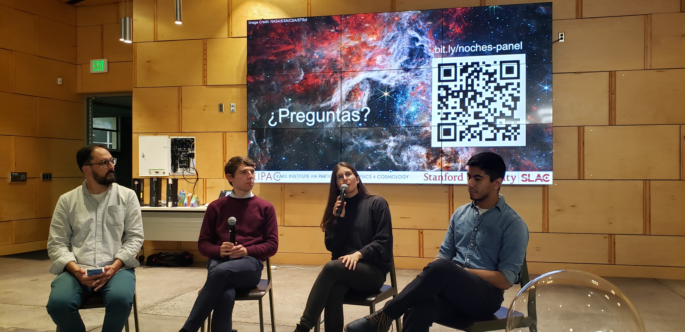
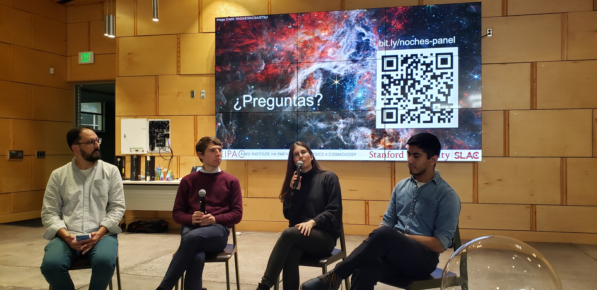

Noches Astronómicas
 

English: I am one of the founding organizers of the Noches Astronómicas program, a Spanish language outreach program hosted by KIPAC to connect with the Hispanic community in the San Francisco Bay Area. We host roughly bi-annual public talk astronomy events. I have served as a presenter at two events on black holes and neutron stars.
Español: Soy un organizador principal del programa Noches Astronómicas en KIPAC, un programa de divulgación en español para connectar con la communidad hispana en la Área de la Bahía de San Francisco. Organizamos eventos de charlas publicas en astronomía al menos dos veces por año. Yo he sido ponente en dos de nuestros eventos, discutando agujeros negros y estrellas de neutrones.
KIPAC Stargazing
In KIPAC, we host regular public stargazing events at the Stanford Student Observatory. At these events, we engage with the local community allowing them to look through telescopes at unique astronomical objects.